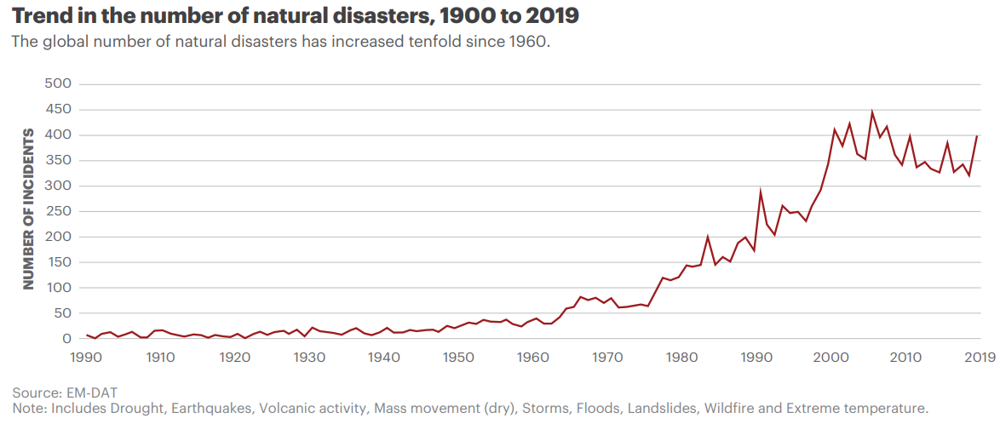

Climate Change and the Water Cycle
Explore the Effects of Climate Change on Our Precious Resource
Altered Precipitation Patterns
Changes in precipitation patterns can lead to
increased instances of both droughts and heavy
rainfall events. This can disrupt water availability
for agriculture, affect drinking water supplies,
and increase the risk of flooding.

Typhoon Noru Philippines, 2022
The main driver for these changes is the rise of global temperatures.
These temperatures alter precipitation patterns by increasing atmospheric moisture content,
resulting in more frequent and intense rainfall events in some regions and prolonged droughts in others.

The above graphs showcase an upwards trend for both the number
of floods and the global temperatures.
Increased Natural Events
More frequent and severe weather events like
hurricanes, cyclones, and heavy storms
have increased steadily in the past century due
to climate change.
Aftermath of Hurricane Ian in Matlacha, Fla. 2022

Melting Ice
Rising temperatures cause glaciers and snowpacks to
shrink and melt earlier, affecting the timing and
availability of freshwater downstream. These changes are intimately
related to the water cycle, particularly in regions where glaciers
and snowpack play a vital role in freshwater supply.

The above graph demonstrates the rapid shrinking of the Antarctic
mass, which is mostly composed of frozen water.
Rise of Sea Levels
Rising sea levels are a direct consequence of
melting ice, and perhaps the most destructive one.
They threaten low-lying islands, coastal areas,
they influence weather patterns, and exacerbate flooding.
Rapid rise of sea levels